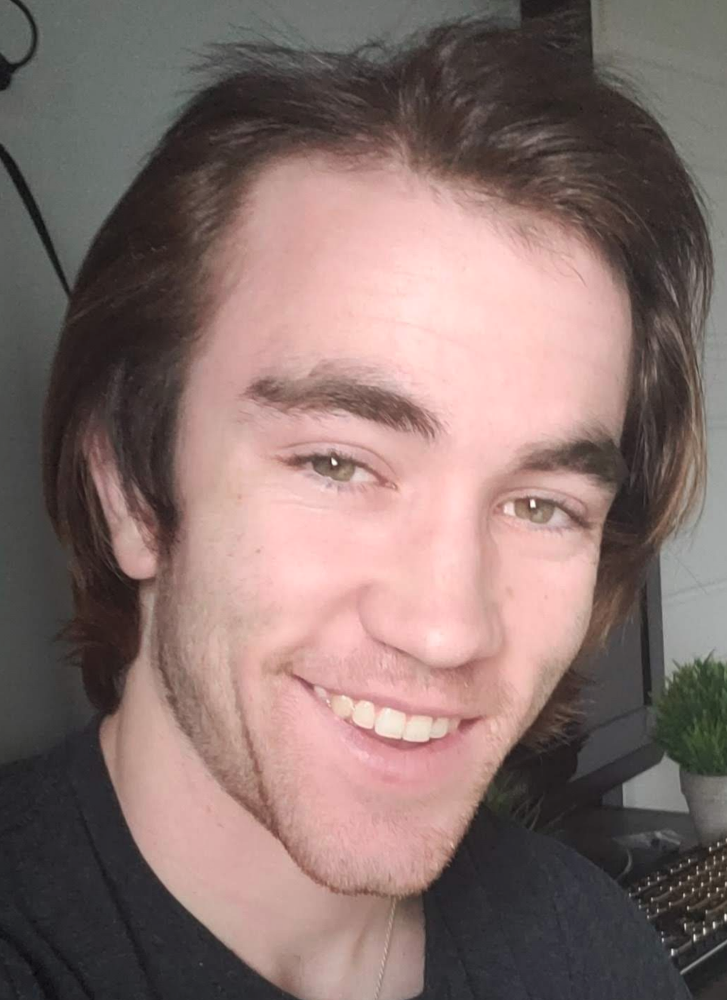

1hi, i'm Will
an aspiring computer vision engineer studying computer science and statistics at Rice University.
click here to download my resume or read more below.
2i like to
3i have worked at
- JHU Applied Physics Lab, parallelizing large-scale graph algorithms and implementing image classifiers more→
- Progeny Systems Corporation, designing object-detection configuration and metric infrastructures more→
4i have performed research at
- Neuro Data Design, developing image segmentation pipelines for neuroimages more→
5i have studied at
- Rice University, pursuing a BS in Computer Science with a 4.15/4.0 GPA more→
- Johns Hopkins University, studying Computer Science and Applied Math. I transferred after one year with a 4.0/4.0 GPA more→
- Coursera, completing Stanford's Machine Learning Course and deeplearning.ai's Deep Learning Specailization
6at hackathons, i have created